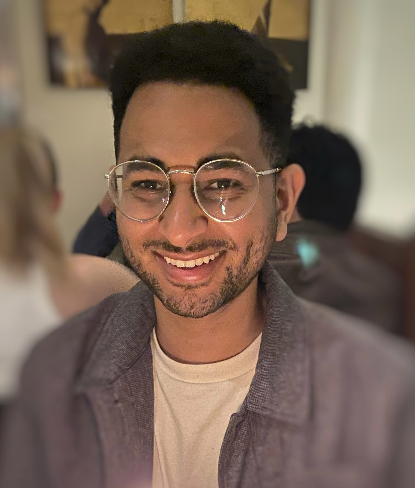

About me
I'm an MS candidate in Health Data Science at UCSF and currently an AI/ML engineer intern with Siemens Healthineers / Varian, building clinical AI that is accurate, trustworthy, and ready for real-world deployment. Before that, I spent nearly a decade across health technology in industry and academia, from ML and GenAI systems at Genentech and Amgen to biophotonic diagnostics at UCLA's Ozcan Lab.
Research interests:
- Clinical foundation models & reinforcement learning: building multimodal models that learn jointly across medical imaging, clinical text, and structured health data, and training them with reinforcement learning for sequential decision-making and treatment strategies.
- Agents for discovery: designing multi-agent systems that accelerate discovery in medicine and science, from synthesizing evidence to generating and testing new hypotheses.
- Evaluation & uncertainty: building benchmarks and evaluation methods, and using Bayesian statistics and uncertainty quantification to measure how well, and how reliably, AI systems perform on real clinical and scientific tasks.
Latest news
- Oct 2026Presented Evidence Engine, our open-source platform for LLM-assisted systematic reviews, at the Language Models for Science (LM4Sci) workshop at COLM 2026.
- Oct 2026Retrieval-augmented verification of chest X-ray radiology reports with an LLM judge accepted at the GenAI for Health workshop, NeurIPS 2026.
- Aug 2026Our systematic review of postdiagnostic red meat, poultry, and egg intake and prostate cancer outcomes was published in The Journal of Urology.
- Jun 2026Completed my MS in Health Data Science at UCSF!
- Jun 2026Joined Siemens Healthineers / Varian Medical Systems as an AI/ML Engineer Intern, building agentic AI for design quality and regulatory affairs.
Selected research

2026 · Poster · Manuscript in prep
RadOncReason: Reinforcement Learning with Verifiable Rewards for Prostate Cancer Treatment Planning
Teshome H, Chen WS, Seyedin SN, Sushil M, Hong JC

2026 · LM4Sci @ COLM · Poster
Evidence Engine: An Open-Source, Human-in-the-Loop Platform for LLM-Assisted Evidence Synthesis and Reviews
Teshome H, Peng OK, Hoffmann TJ, Seaman C, Ackley SF

2026 · J Urol
Postdiagnostic Red Meat, Poultry, and Egg Intake and Risk of Prostate Cancer Progression and Mortality: A Systematic Review
Sandhu S, Teshome H, Van Blarigan EL, Chan JM, Kenfield SA, Graff RE

2020 · ACS Nano
Early-Stage Lyme Disease Diagnosis with a Multiplexed Paper-Based Assay & Machine Learning
Joung HA, Ballard ZS, Wu J, Tseng DK, Teshome H, Zhang L, Horn EJ, Arnaboldi PM, Dattwyler RJ, Garner OB, Di Carlo D, Ozcan A